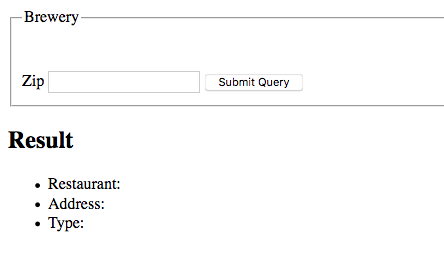

Displaying the Results
Putting it All Together
Now we will look at taking the last GET request from a previous example and render the results in a regular HTML document that any user would be able to read.
This would be an example of how and end user would access the end point on the API
In this example, we will use the example of searching for a location located in Sacramento, CA but allow the user to enter a zip code.
We will create an HTML form that will take in as an argument a zip code.
Below is the code used to generate the HTML form:
The most noteworthy portion of this code is here
input type="text" id="zipField"
This is a text box which collects the zip code from the user and will append it to the GET request.
It is treated as a node in the Document Object Model, to be explained further below.
Adding an Event Listener
Now here is where JavaScript comes into play. On the submit button in the form, we will add an event listener to it which will execute JavaScript to display the information for the Restaurant below it.
Here is the code for the eventHandler
Lets Explain what is happening below....
We leverage use of the Document Object Model to capture and display data. The Document Object Model allows us to model a website much like a data structure. It makes navigating a website through JavaScript code much like traversing linked list or a binary search tree.
Additionally, we are going to be using an AJAX GET request. AJAX stands for Asynchronous JavaScript and XML.
Its a much more efficient way to use JavaScript to handle GET requests as it handles errors and will timeout if the server does not respond fast enough. It allows us to process code while we are awaiting a response, rather than wait for a response from the server to continue processing client side code.
Lets explain the code just a bit further.
This code above essentially maps the HTML to the Document Object Model in order to capture data and reference the HTML tags to manipulate with JavaScript.

The code below accomplishes two tasks: First, it binds a function to the submit button in the HTML form. It makes it an event handler and when you enter a zip-code and click"submit", it will pass the text value down the code stream below.
Second, a callback function is created to handle the state of the GET request. This is where the efficiency of AJAX comes into play. This monitors the readystatechange attribute of the XMLHttpRequest, named req in our example.

Next, we check to see if we are good to go to enter our code. At this point, we got a solid response back from the server via a JSON object and are now able to append information to be displayed in the HTML form.

Now, we capture the JSON request mentioned above so we can further extract properties from the object to display information to the end user. In our example, we are going to display the Name, Address and Type of a Location from BrewersDB.
We are capturing the attributes for Name, Address and Type using DOM. By adding .textContext, it takes the text that is in the JSON attribute and sets it equal to the HTML tags that match the id in getElementById().

This code below handles the event that we do not have a proper response from the server. It will output to the console what the error is, so a developer can troubleshoot.

The Request then captures the zip code entered and appends it to the url passed to the XMLHtttpRequests open call. This work is passed back up to the beginning of the callback function listed above

The final result is shown below. The user enters a zip-code, in my case, 95815, and it displays a Location, its address and type(brewpub).

In conclusion, APIs are very extensive and allow a developer a myriad of options to design their project to suite their needs.
Click below to return to home...
Continue